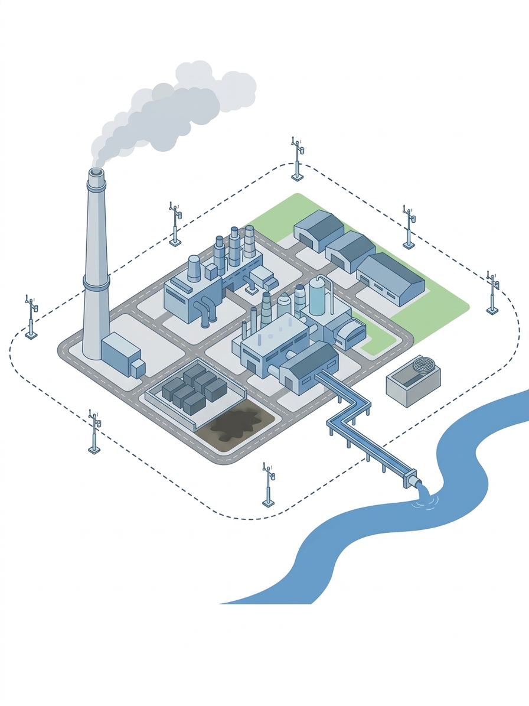

Что вы закрепили
Вы прошли все ключевые точки на площадке и привязали их к конкретным видам разовых проб.
В каждом акте вы осознанно фиксировали точку отбора, режим работы установки или сооружения, условия среды и идентификацию пробы.
Такие акты выдерживают проверку, потому что любой эксперт может восстановить, где и как вы брали пробу и чем руководствовались.
В реальной работе опирайтесь на методики и программу контроля, но держите в голове структуру: место, режим, условия, процедура, маркировка и подписи.
Если в акте есть эти блоки и они написаны конкретно, ваши результаты защищают и предприятие, и вас как специалиста.